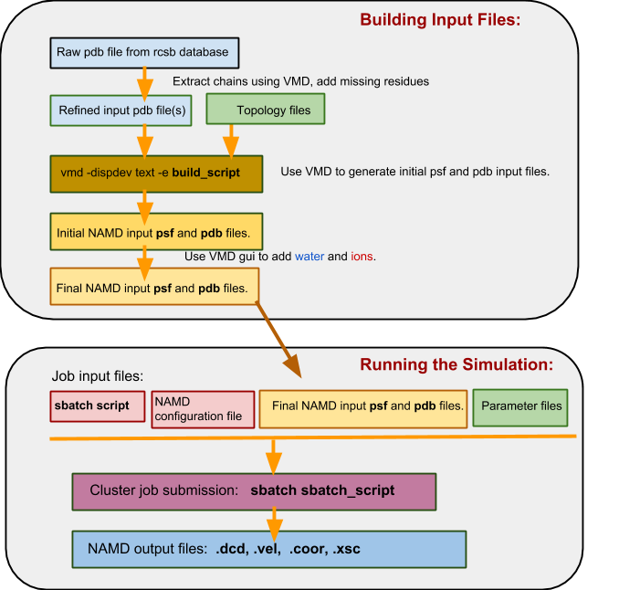
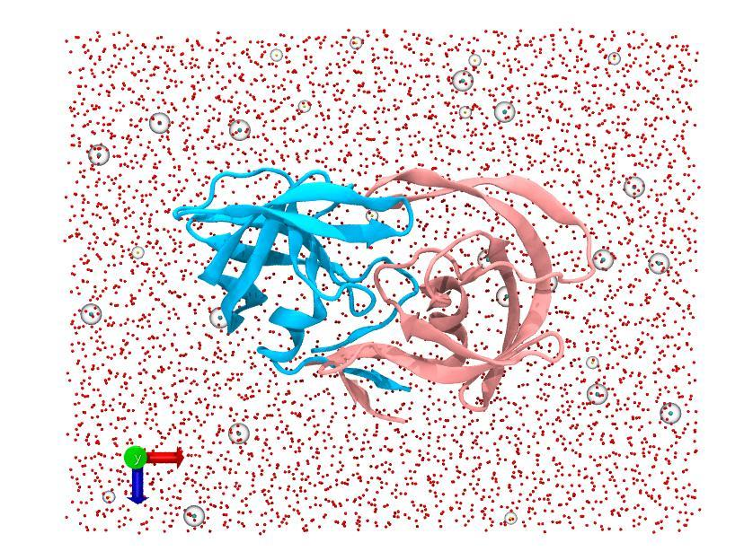
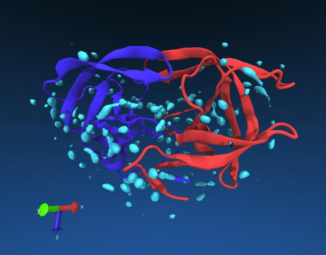

Molecular Dynamics Tutorial - Building input files, visualising the trajectory¶
Overview¶
In the following tutorials we will be logging on a high performance computer (HPC) to submit NAMD molecular dynamics (MD) jobs and visualising the results with the molecular visualization program VMD. As students have a vast range of skill levels and requirements, the tutorials are divided into two parts described below. Each tutorial is designed to be stand alone, start where you feel most comfortable and skip the exercises that are too simple.
-
MD tutorial - Introduction to cluster computing: If you have never launched a job on a cluster before, this tutorial is for you. Here we will simply copy across a bare minimum directory containing input files ready to go for a short NAMD simulation. Once the job is finished, we will download the data to your local computer and visualize the trajectory with VMD.
-
MD tutorial - Building input files (this tutorial): In this tutorial we will be introducing a more sophisticated directory structure using scripts to direct the output and run the job. We initially download a copy of the directory to our local computer where we then build up the input files using VMD. We then upload this directory to the cluster where we submit the job. Finally we will download the results back to our local computer to visualize with VMD.
Learning Objectives¶
At the end of the course, you will be able to:
- Log onto a high performance computer cluster
- Upload files to the cluster
- Submit a basic molecular dynamics job on the cluster
- Download the output and visualise the preliminary results
Requirements¶
This workshop is intended for scientists interested in learning the basics of running molecular dynamics on a HPC cluster.
It is recommended that participants attend Introduction to High Performance Computing prior to this workshop. If you are not familiar with using the command line, please also attend the Introduction to Unix workshop.
Please bring along your laptops with the following installed before arriving:
- VMD (http://www.ks.uiuc.edu/Research/vmd/)
- Putty (https://www.putty.org/) – only if you use Windows.
Important: NAMD has specific licencing requirements. Users are required to agree to these requirements to use NAMD on the Melbourne Bioinformatics HPC clusters. Login on https://my.vlsci.org.au/, select ‘Software agreement’, ‘Add software’, ‘NAMD’.
Note: this tutorial describes the use of Snowy, but all these steps can be carried out on Barcoo by substituting every instance of
snowyforbarcoo.
Tutorials created by Mike Kuiper, edited by Thomas Coudrat.
1 - Overview¶
The aim of this tutorial is to give more advanced lessons in setting up and preparing molecular dynamics jobs for submission to the HPC cluster. It is assumed that the user has a basic command of visualization programs such as VMD and has had at least some experience launching and retrieving example tutorial jobs to the cluster, as shown in our introductory molecular dynamics tutorial.
Tip: in conjunction with this tutorial there are some excellent NAMD tutorials available that are worth working through.
2 - NAMD overview¶
a) Recap: what we’ve done so far¶
In the previous introductory tutorial we simply launched a short job on the cluster that already had all the required input files to simulate a ubiquitin protein molecule in solution.
To run a molecular dynamics simulation on a cluster, the minimum files we need are:
<filename>.psf - protein structure file. A list of the atoms, masses, charges and connections between atoms.
<filename>.pdb - protein database file. The actual starting coordinates of the models. This has to be the same order as the psf file.
<filename>.conf - NAMD configuration file. Tells NAMD how to run the job.
par_all27_prot_na.par - a parameter file. (there are different types of these depending on the classes of molecules you have in your model, such as lipids or DNA). It is used by NAMD to run the simulation, basically a list of all the bonds, angles, dihedrals, improper and VdW terms.
sbatch_batchfile - a script file to launch the job on the cluster depending on the scheduler used (i.e. PBS or Slurm). Tells the cluster how to run the NAMD job and how many cores to use.
In our introductory tutorial all we had to do was launch the job. We will now go through the process of building a NAMD input files from scratch.
b) Building NAMD input files overview¶
In order to build input files for NAMD, we will need a pdb file giving the initial coordinates. We usually get these files from the pdb database. These initial pdb files however are often not ideal, with missing residues and odd chain names making the process more complicated!
To generate NAMD input files, we will use the psfgen module within VMD, together with pdb and topology files, to generate a new pdb file and psf file.
In a flowchart, the process looks something like this:

c) The Namd_intermediate_template directory structure¶
Note: one problem with running molecular dynamics simulations is that you can very quickly build up a mess of output files with the resulting directory becoming disorganized and difficult to navigate. (If you ran the introductory tutorial you may have noticed a lot more files at the end of the run with no particular order!). One solution to this is to have specific directories for certain tasks and using scripts to redirect outputs.
In the next exercise we will download a template directory within which we will build our model and setup our simulation. We will use more sophisticated scripts to launch and manage our jobs that will direct output to appropriate directories.
This directory is found on Snowy, under /vlsci/examples/namd/Namd_intermediate_template.
It has a particular directory structure as follows:
/Namd_intermediate_template
sbatch_start ← script to start equilibration phase
sbatch_production ← script to start production phase
sim_opt.conf ← Namd configuration file for optimization
sim_production.conf ← Namd configuration file for production run
project_plan.txt ← A guide to thinking about your simulation
counter.txt ← File for keeping track of job number
max_jobnumber.txt ← Defines maximum number of jobs
/BUILD_DIR ← this is where we will build our models
/Errors ← errors go here
/Examples ← find some example files here
/InputFiles ← our input files go here
/Parameters
/JobLog ← details of our running jobs end up here
/LastRestart ← If we need to restart a job
/OutputFiles ← Our NAMD output goes here
/OutputText ← Text output from the job
/RestartFiles ← Generic restart files saved here
Rather than running one long job, this template is designed to run into smaller stages. After we build a model and make the appropriate changes to the input files the run is started by launching:
sbatch sbatch_start (don’t do this just yet!)
This will launch a job using the sim_opt.conf configuration file which is designed to equilibrate the system. At the conclusion of the equilibration run, the script will automatically launch the production run: sbatch sbatch_production
Production runs are designed to run less than 24 hours at a time, at the end of which restart files are saved and relaunch themselves for another 24 hour job. Every time they do, the script increases a counter.txt file by 1. Once that reaches the number in the MaxJobNumber.txt file, the job stops. For example, if a 24 hour job completes 5 nanoseconds of simulation a day, and we want a contiguous simulation of say 50 ns, then we’d set the counter.txt file to 0 and the MaxJobNumber.txt to 10 and thus would expect the job to finish in 10 days. The advantage of running a series of smaller jobs rather than one long one is better scheduling on the cluster, and also better protection from data corruption should there be a hardware failure.
The script also date stamps and directs the output to the appropriate folders. A complete dcd trajectory can be reconstructed from the ordered files in the /OutputFile directory.
More of running a job later. First we need to build input files!
3 - Building a HIV protease model¶

Download a copy of the Namd_intermediate_template to your local computer. We will prepare our files here and then upload them to the cluster once ready.
Note: don’t forget the dot at the end
Change into the build directory:
We are going to build a model of HIV protease which is a dimer of two 99 amino acids protein monomers. First we need to extract the two chains as separate pdb files. We will use the RCSB entry 7hvp. Download the pdb file by clicking on “Download Files” (right hand corner), PDB Format. On your local computer start VMD and load the newly downloaded 7hvp.pdb file by doing the following in the VMD main panel:
File → New Molecule → Browse… → Load
In this structure there are 3 “chains”. Chain A and B are the monomers and chain C is the inhibitor PRD_000228. Since there are water molecules associated with each chain selection we need to be more selective.
Highlight the protein selection in the VMD main panel and then click:
File → save coordinates
In the “selected atoms” box of the save trajectory window type:
Save the chain as a pdb file with a sensible name and a pdb extension into BUILD_DIR. (e.g. 7hvp_chainA.pdb)
Repeat for chain B. Since the inhibitor is complicated we will leave chain C out for now for this exercise. We should now have two pdb files in the /BUILD_DIR which will be the basis of our model building, i.e.:
We now have to use a text editor to change the build_example script to point to these files. Open the build_example file with a text editor.
First thing to look for is that we are calling the right topology files. Since this example is only made from protein then the default topology file is fine (The _na part refers to nucleic acids).
If we were to be building a model with a lipid bilayer we would need to also include the topology file referring to lipids, i.e.:
We now need to change and add “segment” lines to point to our new pdb chains.
Edit:
to read:
We also need to change the “coordpdb” lines to reflect our new chains.
Edit:
to read:
Between the ‘segment’ and ‘coordpdb’ lines we can apply patches to make modifications to the protein. This is useful for example when adding disulphide bonds or phosphate groups or modifying the termini. We won’t make any modifications for this example.
Save and close the build_example script. We will now see if we can build the model using VMD from the command line.
Type:
You should see some errors.
This is because in the original chains A and B there are some modified alanine residues labeled ABA. Since the residues ABA are not defined in the topology files, vmd psfgen does not know how to build this model. Edit the 7hvp_chainA.pdb and 7hvp_chainB.pdb files and carefully change any occurrence of ABA to ALA.
Note: spacing in pdb files is really important so don’t mess it up!
Re-run the above command. This should run vmd in text mode and read through the build script. If all goes well we should see 2 new files in the directory:
Note: here we use a “_x” notation to specify temporary files.
Next load these files into VMD. From BUILD_DIR start vmd:
We will now use the solvation module to center and create a solvent box around our protein. We will use dimensions of 80 x 64 x 64 Å. Open the solvation window from the main panel:
Extensions → Modeling → Add Solvation Box
In this window do the following:
- toggle on the “rotate to minimize volume” button.
- Change the Boundary number from “2.4” to “1.8”
- untoggle the ‘use molecular Dimensions” button.
- In the Box Size add:
- min: x: -40 y: -32 z: -32
- max: x: 40 y: 32 z: 32
- click “Solvate”
We now should have two new files, solvate.psf and solvate.pdb, the solvated version of your original input. You should also your newly solvated system in the VMD display.
Tip: you can quickly hide “model_temp_x.psf” and “model_temp_x.pdb” from the VMD display by double-clicking on ‘D’ (Drawn) next to these in the VMD main panel. This helps visualise the solvate.psf system.
Now we can jump straight to adding ions. Adding ions makes the simulation more physiologically relevant and also balances charges. Open the ionization window:
Extensions → Modeling → add ions
In the “Autoionize” window simply toggle the “neutralize and set NaCl concentration” option and click “Autoionize”. We should get about 26 sodium ions and 30 chloride ions added to the system in two new files: ionized.psf and ionized.pdb.
These are are final input files. We should now rename and move these files to a better location in the directory structure. In Linux we can use the command:
and
You can also now remove the old “solvate” and “_x” files to keep things tidy.
4 - Preparing the configuration files¶
By now we have prepared two new input files for a NAMD simulation called hiv_protease.psf and hiv_protease.pdb and placed them in the folder /InputFiles. We now need to make changes to the NAMD configuration files to match our new inputs. In the main directory (Namd_intermediate_template) we have two configuration files and two sbatch files:
a) Edit the .conf files¶
Let us first edit the .conf files. Open the sim_opt.conf file.
You can see that these two lines match our inputs (change them if you used a different name of the psf and pdb files):
The next thing we have to watch is that we have an appropriate parameter file pointed to. Since we have a simple protein model the default parameter file should be fine:
If we were running lipids in the simulation or used a separately parameterized ligand we would add a few extra lines here, say for example:
parameters InputFiles/Parameters/par_all27_prot_lipid.prm
parameters InputFiles/Parameters/par_for_ligand.prm
We also need to make changes to match our periodic boundary conditions (PBC).
The way PBC works is that our simulation box has a certain rectangular geometry which is mirrored on all sides to mimic an infinite system. A molecule which falls out of the left and side of the box fall back in on the right hand side. A molecule that falls out of the bottom reappears at the top and so on. Care has to be given when building a solvated PBC system so that a protein molecule has enough room around its edges so that it doesn’t interact with itself should it wander too close to a boundary.
Since our box ended up being of dimensions 80 x 64 x 64 Å, this is reflected in the PBC parameters here:
That should do it for the optimization configuration file. The idea of the optimization phase is to equilibrate your simulation and allow it to settle before running production runs. Typically we run this with a NPT ensemble, (whereby the number of particles (N) pressure (P) and temperature (T) remain constant). The volume is allowed to change as water and lipids can find their optimal density. At the end of the optimization phase, the sbatch_start script takes the generic output of the run and renames it to pass on to the production phase of the simulation. The sbatch_script will automatically launch the production phase on successful completion of the optimization phase.
The sim_production.conf file controls how we run a segment of the production phase including the type of simulation and how long it runs. The file MaxJobNumber.txt determines how many times this production script is run. Each time a production segment finishes, output is date-stamped and placed in appropriate folders, while restart files are written, ready to launch the next segment. The number in the file counter.txt is increased by 1 to keep track of the jobs. Typically we aim to keep these segments running less than 24 hours at a time. This has a number of advantages, firstly, if the machine should have a failure the most you will loose is one days simulation which is easy to recover from the last restart file. Secondly, this strategy helps with efficiently filling the machine with jobs and keeping your groups quota available. Long jobs scheduled for weeks can tie up resources, quota and risk losing all the generated data should there be a failure in that time.
Open the sim_production.conf file:
Since we would like to run a relatively short job segment for this exercise, we will change the line:
to:
This segment will run for only 20,000 x 2 fs = 0.04 ns at a time. For example, if we set max_jobnumber.txt to be 5 then we will should get 0.2 ns worth of simulation.
Edit the counter.txt file to contain the number 0. (The counter file is a way of running a certain number of jobs. This increments up after each job finished until it reaches the same as MaxJobNumber.txt and then stops). In linux we can simply use:
Then edit the MaxJobNumber.txt file to contain the number 5. This will limit the total number of jobs run. Jobs will stop when counter.txt value is equal to or greater than the MaxJobNumber.txt value.
We can always make this number bigger later and restart the jobs if we want things to go longer.
For this short example we will also change more lines in the sim_production.conf file:
restartfreq 2500
dcdfreq 5000
xstFreq 5000
outputEnergies 5000
outputPressure 5000
outputTiming 5000
to:
restartfreq 25000
dcdfreq 5000
xstFreq 5000
outputEnergies 5000
outputPressure 5000
outputTiming 5000
We don’t have to change the periodic boundary conditions in the sim_production.conf file as we read in the restart files from the previous simulation namely:
set inputname generic_restartfile
binCoordinates $inputname.coor ; # Coordinates from last run (binary)
binVelocities $inputname.vel ; # Velocities from last run (binary)
extendedSystem $inputname.xsc ; # Cell dimensions from last run
There are a number of other control parameters in the production configuration script worth taking a look at including such things as cutoffs and temperature controls if you have time. These don’t change much typically between simulations, but are covered better in the online NAMD tutorials and manuals. The setting we use here are reasonable default values.
Save and close your .conf files.
b) Edit the sbatch scripts¶
The sbatch scripts tell the cluster how to run the simulation and how to handle the generated data. These scripts are a lot more complicated than the ones we saw in the introductory tutorial, but most of the details you need to worry about are all in the first few lines.
In a sbatch script we need to pass arguments to the Slurm scheduler (the controlling program which launches users jobs to the cluster). The way to do so is use a complete code word “#SBATCH” on the first spaces of a line:
#SBATCH --nodes=2 ← this works!
# SBATCH --nodes=2 ← this doesn’t because of the space between “#” and “SBATCH”
Note:
people often get confused with this as the “#” symbol usually denotes a comment line.
PBS scripts work in a similar way, but with the code word “#PBS”
Set the number of nodes used for a job on sbatch_start and sbatch_production to 4, as shown below:
Remember, more nodes is not necessarily faster and can be dramatically slower! It can be a good way to quickly burn up your quota inefficiently. It is a good idea to benchmark your jobs to find an optimal sweet spot, - more of how to do that another time. 4 nodes for this example will be fine.
To set the production job runtime change this line on sbatch_production:
#SBATCH --time=2:0:0 ← (hours:minutes:seconds)
The time or “walltime” tells the cluster how long your job should run. If your job runs longer than this, it will be stopped. As rule of thumb, use the time you expect plus 10%. If you use an excessively long walltime such as days or weeks, the scheduler may take a long time to fit your job into the queue. Generally shorter jobs will get on the cluster faster (but make sure your walltime is appropriate for your configuration file!).
5 - Launching the job on the cluster¶
We are now ready to go ahead with launching the job. For convenience I prefer to keep everything associated with the simulation together in the one directory in including all the build scripts and parameter files. The size of the extra files is tiny compared to the data you generate but this way you can ensure to totally replicate and finding that you happen to make.
Upload the entire directory to your account. Under Linux this might be:
Log into your account on Snowy and change into the top of the Namd_intermediate_template/ directory:
Launch the start script:
This should launch the equilibration phase of the simulation. As mentioned previously, the sbatch_script will automatically direct the output to the proper directories and launch the production phase. This might take an hour or two to complete.
All text output is directed to the /OutputText folder. You can take a peek at how your job is going by using the command tail <filename> which prints out the last few lines of <filename>.
For the purpose of this exercise, we will stop the job early and copy across a pre-computed data set. In your directory you should see slurm output file.
It will look something like this:
The number represents the job number on the cluster. Now use scancel to stop that job (i.e. for above you would use: scancel 123456).
Now that your job has finished, we will copy across a completed job run. From your top directory on Snowy:
Once the jobs are finished (or you have stopped the jobs and copied across the precomputed data), we can download the entire directory back to our local computer for analysis. If you don’t have much memory on your laptop, you can do the analysis remotely on the cluster.
A smart way to copy files back to your local computer is to use rsync. This way you only copy new or changed files back to your computer. In Linux from the local computer terminal this would be:
Note: the dot is important!
Now that you have your data, we are ready to visualize the results.
6 - Visualization of the MD trajectory¶
Hopefully by now you have successfully built a model, completed a small run with the template directory on the cluster and downloaded the results on to your local computer. We will now have a look at the data you generated.
Note: if for some reason you didn’t manage to run a successful MD simulation, you can copy a directory containing the precomputed data from the folowing Snowy folder: /vlsci/examples/namd/Namd_intermediate_template_finished. You can do this with the command below:
a) Combining the trajectory files¶
When we run segmented jobs as in this template, we end up with a series of output files in /OutputFiles such as:
[train01@snowy OutputFiles]$ ls -lrt
total 13184
-rwxr-xr-x 1 train01 TRAINING 1477 Mar 21 10:18 create_dcd_loader_script
-rw-r--r-- 1 train01 TRAINING 4090120 Mar 21 10:45 opt.2017-03-21-10.19.sim_opt_r1.dcd.x
-rw-r--r-- 1 train01 TRAINING 1859296 Mar 21 10:51 2017-03-21-10.45.NamdJob_round01.0.dcd
-rw-r--r-- 1 train01 TRAINING 1859296 Mar 21 10:57 2017-03-21-10.51.NamdJob_round01.1.dcd
-rw-r--r-- 1 train01 TRAINING 1859296 Mar 21 11:03 2017-03-21-10.57.NamdJob_round01.2.dcd
-rw-r--r-- 1 train01 TRAINING 1859296 Mar 21 11:09 2017-03-21-11.03.NamdJob_round01.3.dcd
-rw-r--r-- 1 train01 TRAINING 1859296 Mar 21 11:15 2017-03-21-11.09.NamdJob_round01.4.dcd
-rw-r--r-- 1 train01 TRAINING 195 Mar 21 11:15 dcd_list.txt
-rw-r--r-- 1 train01 TRAINING 742 Mar 21 11:15 combined_dcd_file_loader.vmd
The main output files have the .dcd extension. We can see that things went well as the sizes of these files are identical as expected.
If you have a lot of these files, it can be tedious to read them into VMD. Luckily we can run a script from this directory (you can do this on the cluster if you are running Windows on your local computer) to generate a list of this output to be read in by VMD. Simply run:
This creates the file: combined_dcd_file_loader.vmd
From the main directory on your local computer, we can load in our trajectory using:
then from the main panel:
File → Load Visualization State → /OutputFiles/combined_dcd_file_loader.vmd
Click on the “play” button at the bottom right hand corner of the VMD main panel and watch the simulation run!
Note: it is possible to restart the simulations of any segment as the restart files are saved under /RestartFiles.
b) Molecular dynamics trajectory smoothing¶
The MD example presented here has not run for a particularly long period of time, barely a few hundred picoseconds, thus the relative movement in the molecule is small. For simulations that run on longer timescales there will be an amount of drifting making the analysis and visualization difficult.
Luckily, there is an easy way to center and visualize our simulations which we will cover next. Now display only the protein backbone, in the VMD main panel:
Graphics → Representations…
In the graphical representations window:
Selected Atoms (protein) + Drawing method (NewRibbons)
You may notice the protein jiggles around when you play the trajectory. This is Brownian motion, and this is more prominent in longer sampling.
The first thing we might try to ease the jiggling is to increase the trajectory smoothing window size. In the VMD Graphical representations window, select your protein representation and toggle the Trajectory tab. At the bottom of the tab, increase the Trajectory Smoothing value to 5 and replay the trajectory. This should be much smoother. Try increasing to higher values.
Although this view is smoother, it still can be difficult to visualize what relative motion is going on, due to the motion of the protein in the simulation box.
c) Centering the protein for analysis¶
We will now use the RMSD Trajectory Tool to center our protein frames.
In the VMD main panel, open:
Extensions → Analysis → RMSD Trajectory Tool
This should open up a new window. Towards the top left we have the selection, for the ‘Selection modifiers’ tick ‘Backbone’. In the top right, click “RMSD”.
When you do so, it will calculate the RMSD, of the protein backbone over the course of the simulation. The average value can be quite large depending on how much your selection drifts through space. At this point nothing has changed in the trajectory yet.
Next, click the “ALIGN” button. This will translate each frame to minimize the RMSD of the selection based on the first frame (in this case, our original input files).
In other words, the protein has been centered on a reference frame, but now the water box appears to rotate about the axis. This makes it much more useful for analysis.
Click “RMSD” again and you’ll see the value becomes much smaller.
d) Using Volmap to map ligand density.¶
Now that we have a nicely centered protein dataset we can do something useful like plot the water density. In the VMD main panel, open:
Extensions → Analysis → VolMap Tool
A new VolMap window should open up.
In the selection box type: “water” and tick the box “compute for all frames”, click “Create Map”.
This will calculate a density map based on your water selection and create a new graphical selection. You should see a big white box around your molecule. Open up your graphical representation window and select the new “Isosurface” representation. Under the “Draw style” tab use the Isovalue slider to scale back the density to just a few points (try 1.2).
What you are seeing here are bound water molecules relative to the protein structure. These water molecules stay relatively still compared to the bulk water so create an area of high water density. These can be quite important for drug interactions, protein stability and catalytic centers. We often don’t display waters in simulations for clarity, and often forget that they are there.
If all goes well you might see something like this. The red and blue lines are the chains of the protein, the cyan blobs are regions of high water density averaged from the longer simulation.

Exercise: see if you can identify any ordered waters near the catalytic residues of HIV protease (Asp 25). You may change the resolution of Volmap to 0.5 for more detail.
You can also do this sort of view for ligands to show where they bind. Always make sure you first center your target protein or else this sort of representation will not make sense!
So concludes the intermediate tutorial.
Note: a more advanced template that can be used to organise the MD simulations ran on HPC clusters called MD_workflow_py was written with using the Python programming language. This new workflow uses a similar structure to what was shown in this tutorial and has additional capability to manage thousands of independent jobs and generate molecular animations.